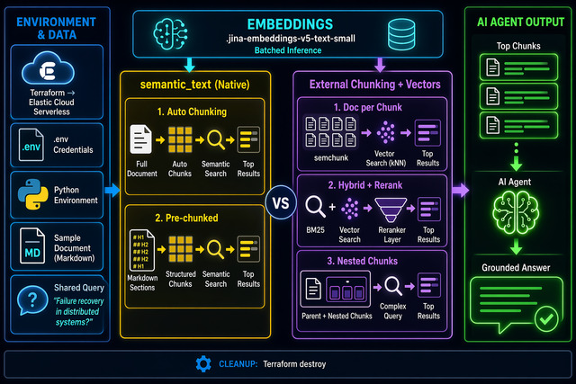
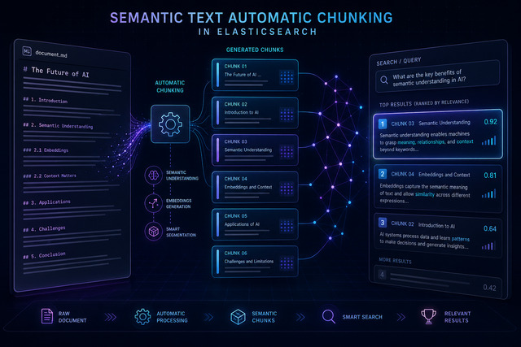
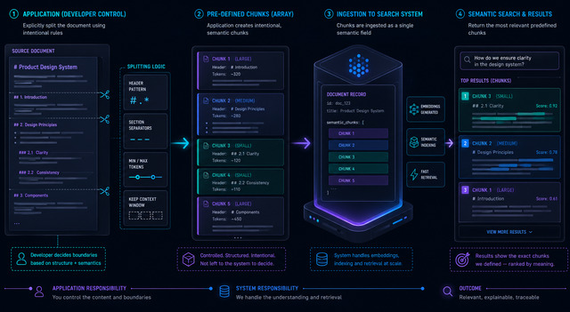
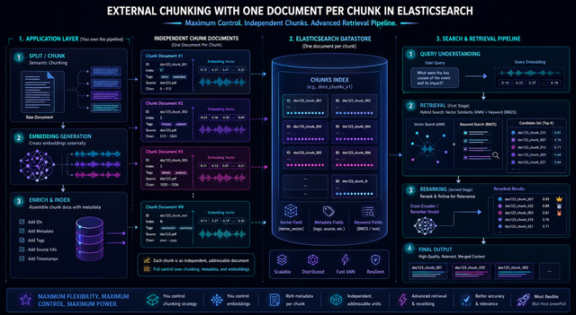
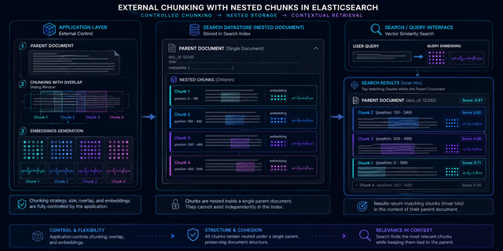

Document chunking breaks large documents into smaller segments before converting them to vectors for storage and retrieval.
This aids an agent by pinpointing the exact excerpt needed to answer a query — rather than retrieving the entire document.
The alternative — vectorizing the whole document — means important details get washed out by surrounding context. Signal is lost.

sample_doc.md — 2,427 words.jina-embeddings-v5-text-small (1024 dims · EIS)dense_vector.

Index the raw document as a single string. Elasticsearch automatically:
.jina-embeddings-v5-text-small on EISscenario1_mapping = {
"mappings": {
"properties": {
"content": {
"type": "semantic_text",
"chunking_settings": {
"strategy": "recursive",
"max_chunk_size": 200,
"separator_group": "markdown"
}
}
}
}
}
es.indices.create(index=S1_INDEX,
body=scenario1_mapping)
es.index(index=S1_INDEX, id=1,
document={"content": doc_content})18 chunks auto-produced — aligned to markdown headings. No external library. No local inference.
response = es.search(
index=S1_INDEX,
body={
"query": {
"semantic": {
"field": "content",
"query": QUERY,
}
},
"_source": False,
"highlight": {
"fields": {
"content": {
"type": "semantic",
"number_of_fragments": 5,
"order": "score",
}
}
},
"size": 5
},
)Top-5 chunks returned in relevance order
chunking_settings
Disable ES auto-chunking with strategy: "none". Application pre-chunks the document and passes a chunk array to the semantic_text field.
ES still handles embedding and retrieval — no dense_vector or inference pipeline needed.
Chunking strategy: regex split on markdown headings (H1 / H2 / H3)
# Disable auto-chunking
mapping = {
"content": {
"type": "semantic_text",
"chunking_settings": {
"strategy": "none"
}
}
}
# Regex split on all markdown headings
chunks = re.split(
r'(?=^#{1,3} )',
doc_content,
flags=re.MULTILINE
)
chunks = [c.strip() for c in chunks
if c.strip()]
# → 24 chunks
# Pass chunk array to semantic_text
es.index(index=S2_INDEX,
document={"content": chunks})24 chunks — one per heading section
semantic_text mapping as Strategy 1
Each chunk is indexed as an independent top-level document with a dense_vector field.
semchunk library (chunk_size=200)parent_id, chunk_indexint8_hnswchunks = chunk(doc_content,
chunk_size=200,
token_counter=token_counter)
# → 15 chunks
# Batch embed via Inference API
result = es.inference.inference(
inference_id=EMBEDDING_MODEL,
task_type="text_embedding",
body={"input": batch}
)
# kNN search
response = es.search(
index=S3_INDEX,
body={
"knn": {
"field": "embedding",
"query_vector": query_embedding,
"k": 5,
"num_candidates": 20
},
"size": 5
}
)kNN results — top-5 chunks
response = es.options(
request_timeout=120).search(
index=S3_INDEX, # same index as kNN
body={
"retriever": {
"text_similarity_reranker": {
"retriever": {
"linear": {
"retrievers": [
{"retriever": {"standard": {
"query": {"match": {
"chunk_text": QUERY}}}},
"weight": 0.3}, # BM25
{"retriever": {"knn": {
"field": "embedding",
"query_vector": query_embedding,
"k": 10}},
"weight": 0.7} # vector
]}},
"inference_id": ".jina-reranker-v3",
"inference_text": QUERY,
"field": "chunk_text"
}
}
}
)No reindexing required — query-level capability
★ Reranker surfaces Circuit Breakers (Chunk 8) — absent from pure kNN top-5

RecursiveCharacterTextSplitter (chunk_size=800, chunk_overlap=100)inner_hitsresponse = es.search(
index=S5_INDEX,
body={
"query": {
"nested": {
"path": "chunks",
"query": {
"knn": {
"field": "chunks.embedding",
"query_vector": query_embedding,
"num_candidates": 20
}
},
"inner_hits": {
"size": 5,
"_source": [
"chunks.chunk_index",
"chunks.chunk_text"
]
}
}
},
"size": 1
},
)Parent document + matched inner hits
semantic_text provides the most automation — index raw text, Elasticsearch handles the rest. Start here.
dense_vector with external chunking gives full control — choose your chunker, your embedding model, and your retrieval strategy.